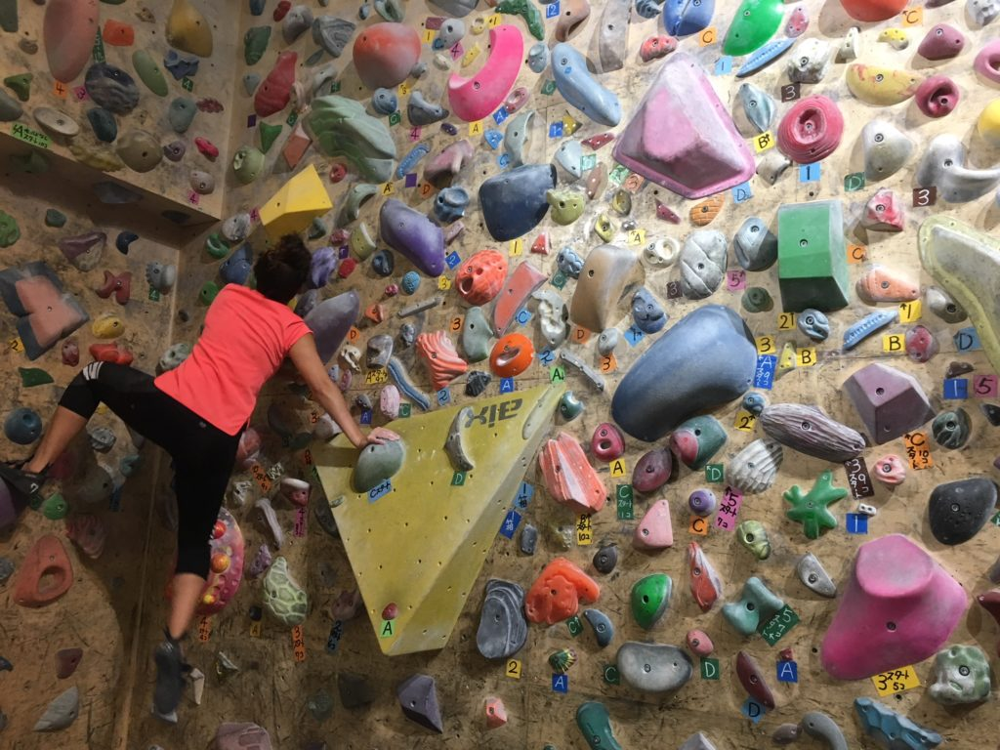
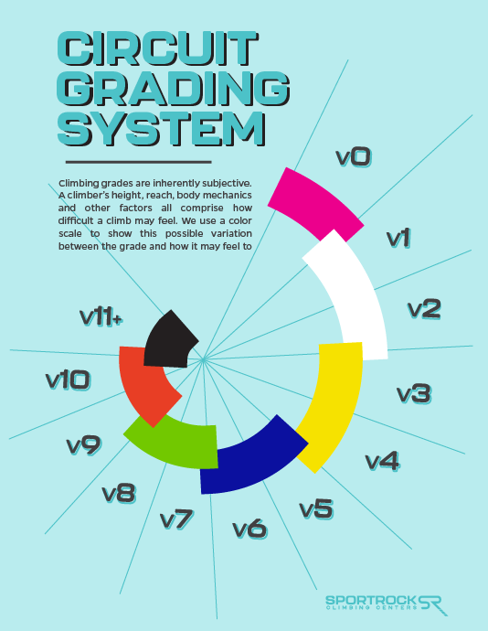

Rock climbing is a very popular sport around the world with many famous climbers from many different countries across the world. There are also many famous rock climbing gyms in Japan with their unique features of packing lots of climbs into much smaller spaces then typical climbing gyms
Rock Climbing in Japan is often known for

Typically shorter climbs called boulders are rated using the V-scale. This is a scale ranging from V1-V16 that is used across the world. Japan is commanly known for setting very "stiff" which means a climb rated V5 may be closer to V6 or 7

| Location | Rating | City | Website |
|---|---|---|---|
B-Pump Ogikubo and Shop |
4.4 Stars |
Tokyo, Suginami |
Click Here |
Bouldering Gym Roca |
4.9 Stars |
Osaka |
Click Here |
Push the Limit |
4.9 Stars |
Kyoto |
Click Here |
Other Websites